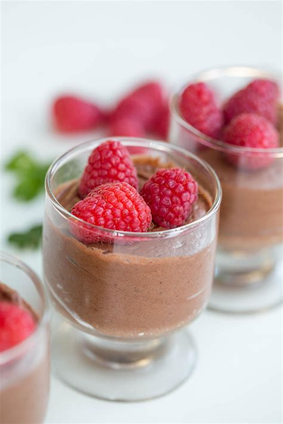

Mousse Recipe

Description
This keto chocolate mousse is perfect when a sweet craving hits. It's so quick it will be ready in no time.
Ingredients
- 3 ounces cream cheese, softened
- 1/2 cup heavy cream
- 1/4 cup powdered zero-calorie sweetener
- 2 tablespoons cocoa powder
- 1 pinch salt
Steps
- Beat cream cheese until light and fluffy.
- Slowly mix in heavy cream. Mix in sweetener, cocoa powder and salt until well incorporated.
- Turn mixer to high and mix until light and fluffy, 1 to 2 minutes more.
- Serve immediately, or refrigerate for later.